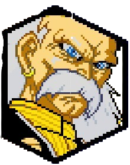
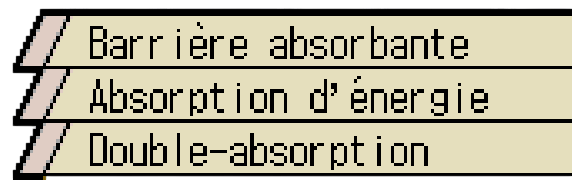
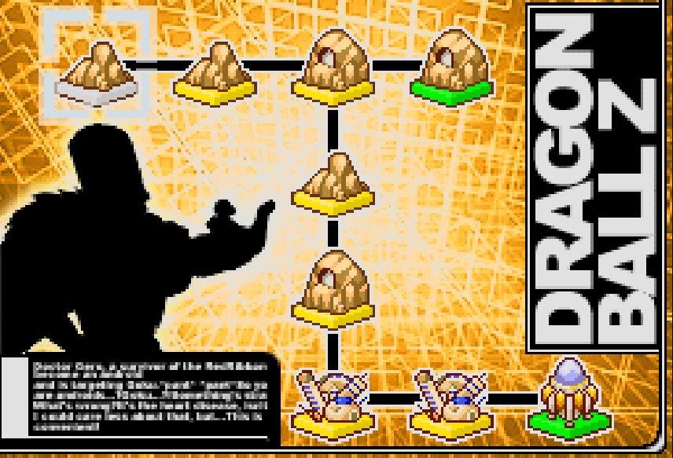
Le docteur Gero est un scientifique de l'armée du Ruban Rouge, il est le seul survivant de l'armée, après sa destruction par Goku. Plein de rancoeur, il décide de se venger en créant des cyborgs. Alors que Mecha Freezer a été vaincu et que Trunks annonce l'arrivée des cyborgs et de la maladie de Goku, 3 ans ce sont écoulées et les cyborgs se montrent à la Team Z, avec la maladie du coeur de Goku qui handicape le Saiyan lors de son combat contre le cyborg. Voyant Goku s'affaiblir, Docteur Gero allait l'achevait en jura au nom du RR que ce dernier le paiera et à ce moment là Vegeta arrive.
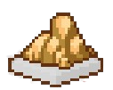
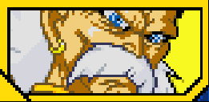

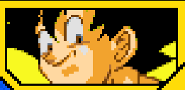
Alors que Gero allait réglé son compte à Goku, Vegeta s'interpose. Alors que Goku est ramené pour se faire soigner, un combat entre le prince des Saiyans et le terrible docteur commence. Alors que le combat se poursuit, Gero pensait avoir eu Vegeta, mais d'un coup il révéla qu'il peut devenir Super Saiyan, Gero le regardit impassible, mais voyant se puissance, il décida de prendre la fuite.

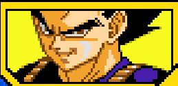
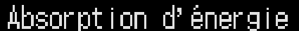
En ayant prit le fuite en direction de son labo, il décida de prendre l'énergie de Piccolo pour pouvoir contourner le problème qu'était Vegeta. Il se faufila et prit en filature Piccolo et lui soutire de l'énergie sans que quiconque ne sache cela, sauf que Piccolo put appeler Gohan par télépathie, c'est alors qu'un combat s'engage entre Gohan et Piccolo.

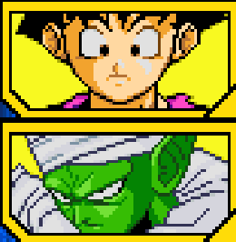
Durant le combat entre Dr Gero et Gohan et Piccolo, Gero réussit à absorber l'énergie de Gohan, le laissant au sol. Il ressentit l'énergie incroyable de Gohan qu'il avait absorbé et se rendit compte que sa puissance a augmenté drastiquement. Sûr de lui et de sa nouvelle puissance, il décida de s'en prendre à Piccolo . En voyant son pouvoir, le Dr Gero décida d'aller voir Vegeta pour aller le défier. Montrant au prince qu'il a bien plus d'énergie qu'un Super Saiyan. Le Super Saiyan, intrigué décida d'engager le combat avec lui pour voir son fameux pouvoir. Gero annihila Vegeta et lui soutira de son énergie et rentre dans son labo vainqueur en laissant Vegeta vaincu.
Débloque l'Attaque Ultime "Absorption d'énergie" .
Battre Piccolo avant Gohan.

Battre Piccolo avant Gohan.

En revenant à son labo, il activa C17, C18 et C16, tout en savant à l'avance qu'il allait se faire trahir et tué car n'étant pas assez puissant pour les contenir et les soumettre. Après les avoir activés, les cyborgs essayèrent de ruser pour pouvoir s'en débarasser, mais Gero les nargua avec la télécommande à la main et en les provoquant sur le fait que désormais, il n'aura plus besoin de cette télécommande pour les soumettre. Enervés de voir que ce vieillard ose se jouer d'eux, les cyborgs décidèrent de combattre contre le docteur, mais le résultat fut sans appel, ce dernier était trop fort pour nos 3 cyborgs et durent donc l'obéir.

Terminer le combat contre Vegeta Super Saiyan.
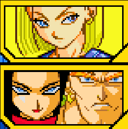
Après avoir réussi à contrôler les cyborgs, Dr Gero commença a éradiquer toute la Terre, en commençant par la Team Z, il ne restait qu'un Trunks enragé de perdre ses amis. La rage le transforma en Super Saiyan. Un jour, Gero rencontra Trunks et essaya de lui prendre de son énergie, mais Trunks étant là pour se battre décida d'engager le combat, du côté du docteur, c'était l'occasion d'essayer sa nouvelle barrière d'énergie. Ayant déjà battu Vegeta, ce fut une victoire écrasante sur Trunks qui choqua même les cyborgs, voyant à quel point, il était intelligent et maintenant puissant également.
Débloque la compétence "Barrière absorbante".

Terminer le combat contre C17, C18 et C16
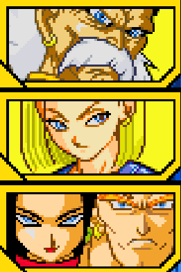
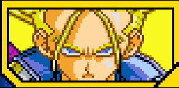
Durant quelques temps les nouvelles circulent et parlent de villes devenues des villes fantômes, les gens y vivent reclus. Entendant cela Dr gero alla vérifier de lui-même, il fit la rencontre de Cell qui venait du futur, à la fin de leur discussion, Cell expliqua au docteur que pour petre parfait, il lui faut les cyborgs C17 et C18. Ils parviennent à un accord où Gero laisse volontairement Cell absorber les deux cyborgs pour qu'il soit parfait. Entendant cela les cyborgs pris de corps durent affronter le Dr Gero et ce monstre de Cell. Ce qui résultat par l'absorption des deux cyborgs, quand bien même C17 résistait, Gero fit en sorte que Cell les absorbe. Désormais Cell était devenu parfait et invincible. Le docteur n'en revenait pas d'avoir été le créateur d'un être aussi puissant que Cell sous forme parfaite.
Débloque l'attaque combinée avec Cell 2e Forme "Double-absorption".

Terminer le combat contre Trunks Super Saiyan.
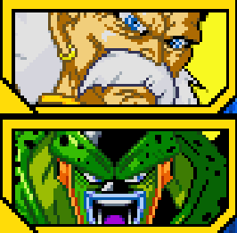
En tant que scientifique, Docteur Gero est heureux de constater le pouvoir illimité de Cell, mais il sait qu'au fond à l'image de ses précédentes créations, Cell le trahira un jour ou l'autre. Cell avait déjà vaincu Goku, le plus puissant guerrier de la Terr à ce jour. Même si Gero avait augmenté sa puissance en absorbant l'énergie des Saiyans comme Gohan, Vegeta et Trunks, il n'était pas aussi puissant que Cell. Etant légèrement déçu de le détruire, il se dit que c'était la bonne chose à faire et également le bon moment pour. Maintenant Cell compte guider le docteur vers le lieu de la machine qu'il a emprunté pour voyager dans le temps. Cell plutôt curieux de l'utilisation de la machine par le docteur lui posa la question, Gero lui répondit qu'il souhaitait voir le futur, quand il n'y aura plu personne. Cell demanda ce qu'il y fera quand il y sera et là Gero lui répondit qu'au final ce sera lui qui y sera mais pas lui même. Il avait fait un plan de manière à ce que le virus qu'il a créer pour contrer Cell, fonctionne dés qu'il aura prit une partie de son énergie, c'est alors qu'un combat contre la montre se mit en place afin que le plan de docteur marche. Ayant après cette manoeuvre, réussit à lui prendre son énergie, le corps de Cell ne pouvait plus bouger, Docteur Gero révéla qu'il avait installé un système d'auto-destruction dans la machine, afin de s'en débarrasser, quand bien même Cell survit à l'explosion de la machine, il ne pourra jamais revenir, étant coincé dans un futur où il n'y a personne. Il fit ses adieux à Cell et la machine disparut dans le futur. Nul ne sait ce que Cell fera du restant de ses jours. Après avoir exilé Cell dans un très lointain futur, il poursuivit ses recherches sur les formes de vies extraterrestres, en y réfléchissant après avoir vaincu Goku et avoir remplit son objectif, il décida d'abandonner l'armée du Red Ribbon, pour investiguer sur les mystères de l'Univers. C'est alors qu'il abti un vaisseau spatial et disparut dans les profondeurs de l'espace, nul ne saura où il est allé et encore de ce qu'il adeviendra de lui.
Débloque Cell (2e forme) comme personnage jouable.

Terminer le combat contre C17, C18 et C16.
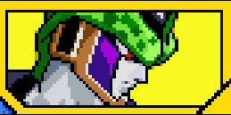
Voyant qu'il n'a l'ombre d'une chance, Gero s'enfuit dans son labo en promettant que les cyborgs C17 et C18 s'occuperont des guerriers Z comme il se doit, il retourna dans son labo pour les activer, c'était son Joker pour se débarasser de Vegeta et des autres, mais qu'elle ne fut pas sa surprise en voyant qu'en activant les cyborgs, non seulement ils l'écoutent pas mais en plus ils en viennent au main, un terrible combat se lança. Mais malheuresement ce fut le tout dernier combat qui marqua la fin du Docteur, en se faisant tué puis achevé par C17. Il ne naîtra plus aucun cyborg... Toutefois dans les profondeurs du laboratoire du terrible Dr Gero, l'ordinateur de ce dernier continuait de travailler sur le prochain cyborg qui naîtra et marquera l'arrivée d'une nouvelle menace.
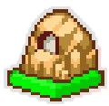